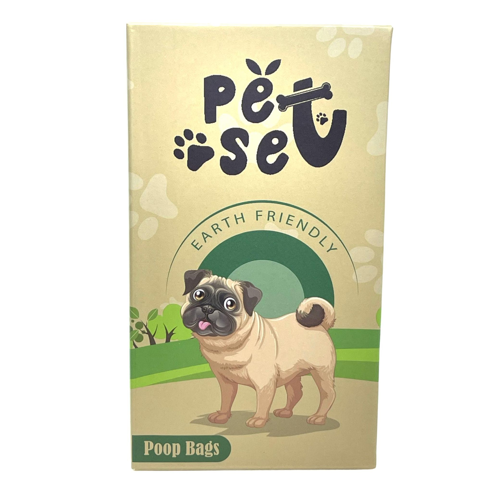

- ENVIRONMENT MATTERS: 38% Biobased dog poop bags meet USDA Certified and use recycled materials
in our packaging and roll core to offer a much green way to dispose of dog waste.
- LARGE DOG POOP BAGS: Bags with dimensions 9*13 inches, flat bottom, large enough for all sizes
dogs and cats.
Each roll with dimensions 1.18*2.36 inches fits all standard-size leash dispensers.
- New Version: Be a part of sustainable living is always the purpose of PET N PET. These poop bags
are made of less plastic and more bio based materials.
They may feel softer than before but actually 16.66% thicker, absolutely strong enough. Let's
benefit our earth from now.
- EASY TO USE: The sticker doggie poop bags is serrated down the middle without tearing the first
bag when you use it.
Doggy bags with a unique tear perforation and "Open" arrow, easy to tear off, open and detach
from the roll.
Product Details:
- Brand: Pet Set by Stacy Talan
- Dimensions: 9 x 13 inches
- Composition: at least 38% biobased materials, with recycled packaging and roll core
- Dispenser: fits most standard-size poop bag rolls, clips onto leash or purse
- Color: green
